cnt = c(2, 2, 1, 1, 0, 4, 3, 0, 2, 1, 1, 1, 4, 0, 2, 2, 3, 2, 4, 3, 2)Homework 3. Bayes AI
Exercise 1 (Poisson for Car Counts) Times were recorded at which vehicles passed a fixed point on the M1 motorway in Bedfordshire, England on March 23, 1985.2 The total time was broken into 21 intervals of length 15 seconds. The number of cars passing in each interval was counted. The result was:
This can be summarized in the following table, that shows 3 intervals with zero cars, 5 intervals with 1 car, 7 intervals with 2 cars, 3 intervals with 3 cars and 3 intervals with 4 cars.
table(cnt)cnt
0 1 2 3 4
3 5 7 3 3 - Do you think a Poisson distribution provides a good model for the count data? Justify your answer.
- Assume that \(\Lambda\), the rate parameter of the Poisson distribution for counts (and the inverse of the mean of the exponential distribution for inter arrival times), has a discrete uniform prior distribution on 20 equally spaced values between \((0.2, 0.4,\ldots 3.8, 4.0)\) cars per 15-second interval. Find the posterior distribution of \(\Lambda\).
- Find the posterior mean and standard deviation of \(\Lambda\).
- Discuss what your results mean in terms of traffic on this motorway.
Solution:
- A Poisson distribution is a good model to consider for the arrival counts because:
- The data consist of counts of discrete events.
- It seems reasonable that the events would be independent.
- It seems reasonable that the rate of occurrence would remain constant over the 4+ minutes that the sample was taken.
These are reasons to consider a Poisson distribution, but we still need to investigate how well a Poisson distribution fits the observations. We will do this by comparing the sample frequencies with Poisson probability mass function. To do this, we need to estimate the mean of the distribution. We calculate the sample mean by summing these observations (40 total cars passing) and dividing by the number of intervals (21), to obtain an estimated arrival rate of about 1.9 cars per 15 second time interval.
Next, we use the Poisson probability mass function \(f(x|\Lambda=1.9) = e^{−1.9} (1.9)^x / x!\) to estimate the probability of each number of cars in a single interval, and multiply by 21 to find the expected number of times each value occurs (Note: for the 5 or more entry, we use \(1-F(4|\Lambda=1.9)\), or 1 minus the Poisson cdf at 4. The probability of more than 5 cars in 15 seconds is very small.) The expected counts are:
d = data.frame(cars=0:5,sample=c(3,5,7,3,3,0),expected=c(21*dpois(0:4,1.9),ppois(4,1.9)))
print(d) cars sample expected
1 0 3 3.14
2 1 5 5.97
3 2 7 5.67
4 3 3 3.59
5 4 3 1.71
6 5 0 0.96The values in this table seem to show fairly good agreement. We can do a visual inspection by drawing a bar chart, shown below. The bar chart shows good agreement between the empirical and the Poisson probabilities.
barplot(height = t(as.matrix(d[,2:3])),beside=TRUE,legend=TRUE)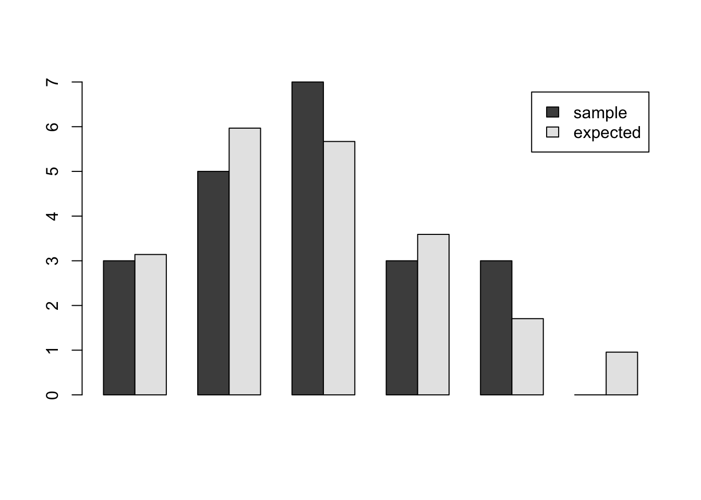
We can also perform a Pearson chi-square test (this is not required). The test statistic is calculated as: \[ \chi^2 =\sum_i (Y_i −E_i)^2/E_i \] where \(Y_i\) is the observed count for i cars passing, and \(E_i\) is the expected number of instances of i cars passing in a sample of size 21. The chi-square test should not be applied when counts are very small. A common (and conservative) rule of thumb is to avoid using the chi-square test if any cell has an expected count less than 5. Other less conservative rules have been proposed.4 We will combine the last two categories to increase the expected count to 2.37. To find the expected counts in this last category, we assign it probability 1 minus the cdf at x=3, and multiply by 21. The observed and expected counts are:
sum(((d$sample-d$expected)^2/d$expected)[1:4]) + (3-2.65)^2/2.65[1] 0.62Next, we find the degrees of freedom, n – p -1, where n is the number of categories and p is the number of parameters estimated. We have 5 categories, and we estimated the mean of the Poisson distribution, so the degrees of freedom are 5 - 1 - 1, or 3. Therefore, we compare our test statistic 0.616 against the critical value of the chi-square distribution with 3 degrees of freedom. The 95th percentile for the chi- square distribution with 3 degrees of freedom is 7.8.
qchisq(0.95,3)[1] 7.8Some students have tried a Q-Q plot of the Poisson quantiles against the data quantiles. Because there are only 4 distinct values in the sample, the plot shows most of the dots on top of each other. Comparing empirical and theoretical frequencies to is much more informative for discrete distributions with very few values.
We can also compare the sample mean and sample variance of the observations, recalling that the mean and variance of the Poisson distribution are the same. The sample mean of the observations is 1.90 and the sample variance is 1.59. The standard deviation of the sample mean is approximately equal to the sample standard deviation divided by the square root of the sample size, or \(\sqrt{1.59/21} = 0.275\). Therefore, the CI is
1.90 + c(-1,1)*0.275*qt(0.975,20)[1] 1.3 2.5The observations seem consistent with the hypothesis that the mean and standard deviation are equal.
You did not need to do everything described in this solution. If you gave a thoughtful argument for whether the Poisson distribution was a good model, and if you used the data in a reasonable way to evaluate the fit of the distribution, you would receive credit for this problem.
- To find the posterior distribution, we calculate the Poisson likelihood at each of the 20 lambda values, and multiply by the prior probability of 1/20. Then we divide each of these values by their sum. The formula is: \[ p(\lambda|X) = \frac{f(X|\lambda)g(\lambda)}{\sum_{i=1}^{20} f(X|\lambda_i)g(\lambda_i)} \] We use the constant prior of \(g(\lambda) = 1/20\) factors out of both the numerator and denominator, so it is unnecessary to include it. In fact, when the prior distribution is uniform, the posterior distribution is the same as the normalized likelihood.
The posterior pmf is shown in the plot below.
lambda = seq(0,4,0.2)
likelihood=function(lambda) prod(dpois(cnt,lambda))
l = sapply(lambda,likelihood)
posterior = l/sum(l)
barplot(posterior,names.arg=lambda,xlab="lambda",ylab="posterior probability")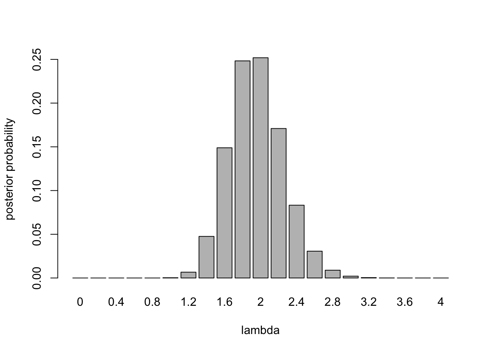
m = sum(posterior*lambda)
print(m)[1] 2sqrt(sum(posterior*(lambda-m)^2))[1] 0.3- From this analysis, we see that a Poisson distribution provides a good model for counts of cars passing by this point on the roadway. The rate is approximately 2 cars per 15 seconds. There is uncertainty about this rate. There is a 95% chance the rate is less than or equal to 2.4, and there is about a 98% probability that the rate lies between 1.4 and 2.6 cars per second. If we gathered more data, we would gain more information about the rate, which would narrow the range of uncertainty.
Exercise 2 (Car Count Part 2) This problem continues analysis of the automobile traffic data. As before, assume that counts of cars per 15-second interval are independent and identically distributed Poisson random variables with unknown mean \(\Lambda\).
- Assume that \(\Lambda\), the rate parameter of the Poisson distribution for counts, has a continuous gamma prior distribution for \(\Lambda\) with shape 1 and scale 10e6. (The gamma distribution with shape 1 tends to a uniform distribution as the scale tends to \(\infty\), so this prior distribution is “almost” uniform.) Find the posterior distribution of \(\Lambda\). State the distribution type and hyperparameters.
- Find the posterior mean and standard deviation of \(\Lambda\). Compare your results to Part I. Discuss.
- Find a 95% symmetric tail area posterior credible interval for \(\Lambda\). Find a 95% symmetric tail area posterior credible interval for \(\theta\), the mean time between vehicle arrivals.
- Find the predictive distribution for the number of cars passing in the next minute. Name the family of distributions and the parameters of the predictive distribution. Find the mean and standard deviation of the predictive distribution. Find the probability that more than 10 cars will pass in the next minute. (Hint: one minute is four 15-second time intervals.)
Solution:
- We observed 40 cars passing in \(n\)=21 15-second intervals.
sum(cnt)[1] 40The posterior distribution is a gamma distribution with shape 1 + 40 = 41
1+sum(cnt)[1] 41and scale
n = length(cnt)
1/(1e-6 + n)[1] 0.048The posterior distribution is \[ \Lambda|X \sim \text{Gamma}(41,0.04761905) \]
curve(dgamma(x,shape=41,scale=0.04761905),from=0,to=5)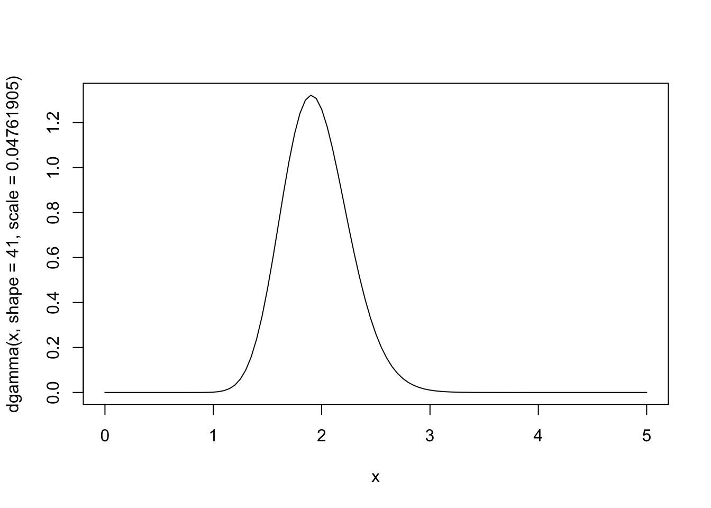
- The posterior mean is 41/21=1.952, and the posterior standard deviation is \(\sqrt{41}/21 = 0.304\). Let’s compare
| mean | sd | mode | median | 95% CI | |
|---|---|---|---|---|---|
| Discretized | 1.95 | 0.305 | 2 | 2 | [1.4, 2.6] |
| Continuous | 1.95 | 0.305 | 1.9 | 1.94 | [1.40, 2.59] |
These values are almost identical. The slight differences in the median and mode are clearly artifacts of discretization. The discretized analysis gives a good approximation to the continuous analysis.
- The 95% symmetric tail area posterior credible interval for \(\Lambda\) is
qgamma(c(0.025,0.975),shape=41,scale=0.04761905)[1] 1.4 2.6and for \(\Theta\) is
1/qgamma(c(0.975,0.025),shape=41,scale=0.04761905)[1] 0.39 0.71- The Poisson / Gamma predictive distribution is a negative binomial distribution. For this problem, we predict the number of cars in the next four time periods (1 minute is four 15-second blocks). The predictive distribution is negative binomial with the parameters:
- size a= 41
- prob p = 1/(1+4b) = 1/(1+4/21) = 0.84
The mean is \(nab = 4\cdot 41\cdot 0.84 = 7.81\) and standard deviation of the predictive distribution is \[
\sqrt{na \dfrac{1-p}{p^2}} = \sqrt{4\cdot 41 \cdot \dfrac{1-0.84}{0.84^2}} = 2.83
\] The probabilities, as computed by the R dnbinom function, are shown in the table. Results from the Poisson probability mass function with mean \(4ab = 7.81\) are shown for comparison.
k = 0:20
p = dnbinom(k,size=41,prob=1/(1+4/21))
p = p/sum(p)
p = round(p,3)
p = c(p,1-sum(p))
poisson = round(dpois(k,7.81),3)
poisson = c(poisson,1-sum(poisson))
d = cbind(k,p,poisson)Warning in cbind(k, p, poisson): number of rows of result is not a multiple of
vector length (arg 1)print(d) k p poisson
[1,] 0 0.001 0.000
[2,] 1 0.005 0.003
[3,] 2 0.017 0.012
[4,] 3 0.040 0.032
[5,] 4 0.070 0.063
[6,] 5 0.101 0.098
[7,] 6 0.124 0.128
[8,] 7 0.133 0.143
[9,] 8 0.127 0.139
[10,] 9 0.111 0.121
[11,] 10 0.089 0.094
[12,] 11 0.066 0.067
[13,] 12 0.046 0.044
[14,] 13 0.030 0.026
[15,] 14 0.018 0.015
[16,] 15 0.011 0.008
[17,] 16 0.006 0.004
[18,] 17 0.003 0.002
[19,] 18 0.002 0.001
[20,] 19 0.001 0.000
[21,] 20 0.000 0.000
[22,] 0 -0.001 0.000barplot(t(d[,2:3]),beside=TRUE,names.arg=d[,1],xlab="k",ylab="probability")
legend("topright",c("negative binomial","poisson"),fill=c("black","white"))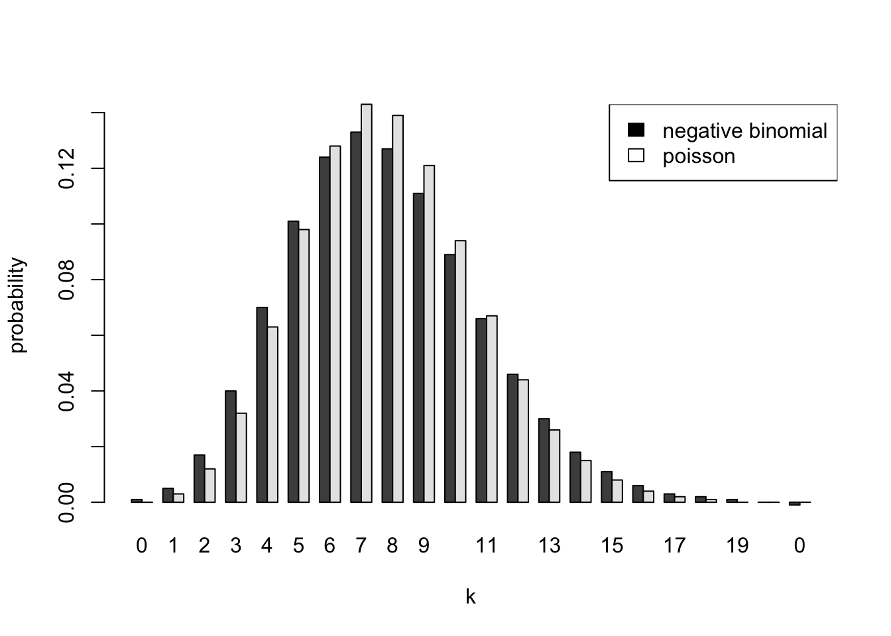
The difference between the Bayesian predictive distribution and the Poisson distribution using a point estimate of the rate is even more pronounced if we predict for the next 21 time periods (5 1⁄4 minutes). This was not required, but is interesting to examine. Again, the distribution is negative binomial with: size \(a = 41\), and probability \(p = 1/(1 + 21b) = 0.5\)
k = 0:65
p = dnbinom(k,size=41,prob=0.5)
p = p/sum(p)
p = c(p,1-sum(p))
poisson = dpois(k,21*41/21)
poisson = c(poisson,1-sum(poisson))
d = cbind(k,p,poisson)Warning in cbind(k, p, poisson): number of rows of result is not a multiple of
vector length (arg 1)barplot(t(d[,2:3]),beside=TRUE,names.arg=d[,1],xlab="k",ylab="probability")
legend("topright",c("negative binomial","poisson"),fill=c("black","white"))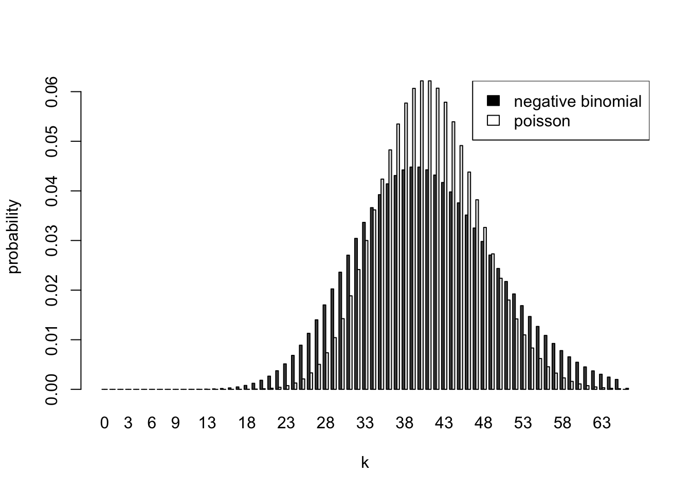
To summarize, the predictive distribution is negative binomial with size \(a = 41\), and probability \(p = 1/(1 + nb)\) where \(n\) is the number of periods into the future we are predicting. The uncertainty in \(\Lambda\) makes the predictive distribution more spread out than the Poisson distribution with the same mean. When n=1, the Poisson and negative binomial probabilities are very similar. The differences become more pronounced as we try to predict further into the future.
Exercise 3 (Lung disease) Chronic obstructive pulmonary disease (COPD) is a common lung disease characterized by difficulty in breathing. A substantial proportion of COPD patients admitted to emergency medical facilities are released as outpatients. A randomized, double-blind, placebo-controlled study examined the incidence of relapse in COPD patients released as outpatients as a function of whether the patients received treatment with corticosteroids. A total of 147 patients were enrolled in the study and were randomly assigned to treatment or placebo group on discharge from an emergency facility. Seven patients were lost from the study prior to follow-up. For the remaining 140 patients, the table below summarizes the primary outcome of the study, relapse within 30 days of discharge.
| Relapse | No Relapse | Total | |
|---|---|---|---|
| Treatment | 19 | 51 | 70 |
| Placebo | 30 | 40 | 70 |
| Total | 49 | 91 | 140 |
- Let \(Y_1\) and \(Y_2\) be the number of patients who relapse in the treatment and placebo groups, respectively. Assume \(Y_1\) and \(Y_2\) are independent Binomial(70,\(\theta_i\) ) distributions, for \(i=1,2\). Assume \(\theta_1\) and \(\theta_2\) have independent Beta prior distributions with shape parameters 1⁄2 and 1⁄2 (this is the Jeffreys prior distribution). Find the joint posterior distribution for \(\theta_1\) and \(\theta_2\). Name the distribution type and its hyperparameters.
- Generate 5000 random pairs \((\theta_1, \theta_2)\), \(k=1,\ldots,5000\) from the joint posterior distribution. Use this random sample to estimate the posterior probability that the rate of relapse is lower for treatment than for placebo. Discuss your results.
Solution:
- The prior distribution for each condition is \(Beta(1/2,1/2)\). Therefore, the posterior distributions for \(\theta_1\) and \(\theta_2\) are Beta distributions with parameters and quantiles as shown below.
# Study results
k.trt=19 # Number of relapses in treatment group
n.trt=70 # Number of patients in treatment group
k.ctl=30 # Number of relapses in control group
n.ctl=70 # Number of patients in control group
#Prior hyperparameters
alpha.0 =0.5
beta.0=0.5
# The joint posterior distribution is the product of two independent beta
# distributions with posterior hyperparameters as shown below
alpha.trt=alpha.0 + k.trt
beta.trt=beta.0 + n.trt-k.trt
alpha.ctl=alpha.0 + k.ctl
beta.ctl=beta.0 + n.ctl-k.ctl
# Posterior credible intervals
trt.intrv=qbeta(c(0.025,0.975),alpha.trt,beta.trt)
ctl.intrv=qbeta(c(0.025,0.975),alpha.ctl,beta.ctl)
d = data.frame(treatment=c(alpha.trt,beta.trt,trt.intrv), control=c(alpha.ctl,beta.ctl,ctl.intrv), row.names=c("alpha","beta","2.5%","97.5%"))
knitr::kable(t(d))| alpha | beta | 2.5% | 97.5% | |
|---|---|---|---|---|
| treatment | 20 | 52 | 0.18 | 0.38 |
| control | 30 | 40 | 0.32 | 0.55 |
It is important to remember that the joint density or mass function is a function of all the random variables. Because \(\theta_1\) and \(\theta_2\) are independent and the \(Y_i\) are independent conditional on the \(\theta_i\), the two posterior distributions are independent. We can see this by writing out the joint distribution of the parameters and observations: \[ Bin(x_1|\theta_1,70)Bin(x_2|\theta_2,70)Be(\theta_1|1,1)Be(\theta_2|1,1) = {70 \choose 19}\theta_1^{19}(1-\theta_1)^{51}{70 \choose 30}\theta_2^{30}(1-\theta_2)^{40} \] This is proportional to the product of two Beta density functions, the first with parameters (19.5,51.5), and the second with parameters (30.5,40.5).
Conditional on the observations, \(\theta_1\) and \(\theta_2\) are independent Beta random variables. The marginal distribution of \(\theta_1\) is Beta(19.5, 51.5) and the marginal distribution of \(\theta_1\) is Beta(30.5, 40.5).
The joint density function is the product of the individual density functions (remember that if \(n\) is an integer, \(n! = \Gamma(n+1))\) and \(B(\alpha, \beta) = \Gamma(\alpha)\Gamma(\beta)/\Gamma(\alpha+\beta)\) \[ Be(\theta_1|20,52)Be(\theta_2\mid 31,41) = \dfrac{\Gamma(20+52)}{\Gamma(20)\Gamma(52)}\theta_1^{19}(1-\theta_1)^{51}\dfrac{\Gamma(31+41)}{\Gamma(31)\Gamma(41)}\theta_2^{30}(1-\theta_2)^{40} \] A plot of the two posterior density functions is shown below. The 95% credible intervals are shown on the plot as vertical lines
curve(dbeta(x,19.5,51.5),0,0.6,ylab="Density",lty=2,ylim=c(0,8))
curve(dbeta(x,30.5,40.5),0,0.6,add=TRUE)
abline(v=trt.intrv,lty=2, lwd=0.5)
abline(v=ctl.intrv,lty=2, lwd=0.5)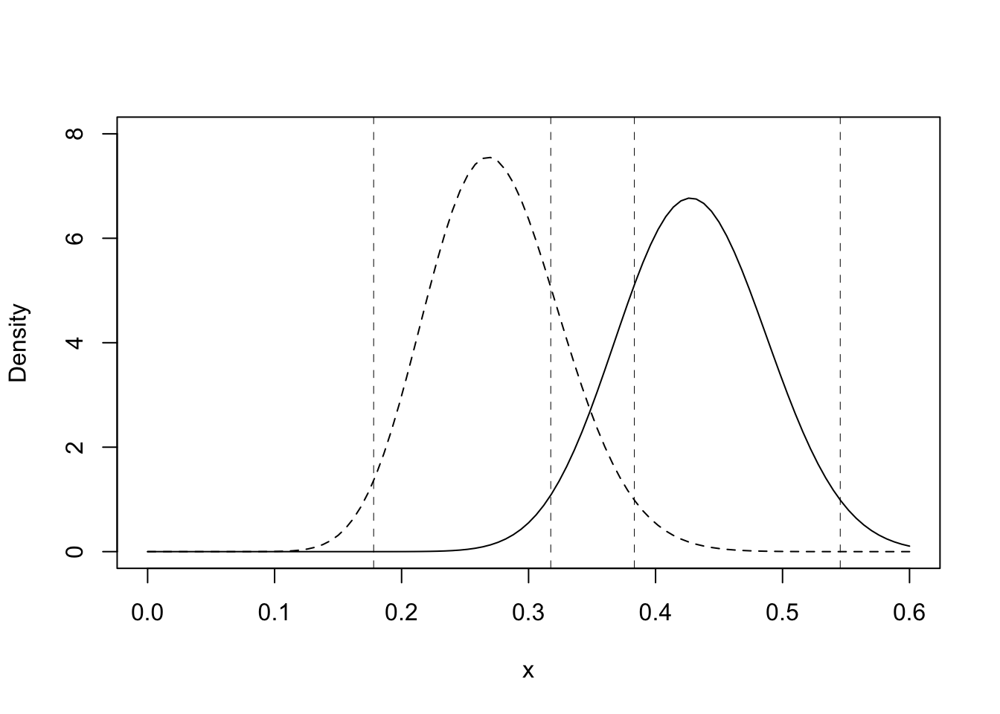
To visualize the joint density function of \(\theta_1\) and \(\theta_2\), we can do a surface or contour plot (you were not required to do this). The joint density function is a function of two variables, \(\theta_1\) and \(\theta_2\). To visualize the joint density function, we need either a surface plot or a contour plot (you were not required to do this). A surface plot is shown below.
gs<-200 # grid size
theta.t<-seq(0.25,0.6,length=gs) # treatment mean
theta.c<-seq(0.1,0.45 ,length=gs) # control mean
dens<-matrix(0,gs,gs) # density function
for(i in 1:gs) {
dens[i,]=dbeta(theta.t[i],alpha.trt,beta.trt) * dbeta(theta.c,alpha.ctl,beta.ctl)
}
# Perspective plot
persp(theta.t,theta.c,dens,theta=30,phi=5,xlab="Treatment Relapse Prob",
ylab="Control Relapse Prob",zlab="Probability Density",
xlim=theta.t[c(1,gs)] ,ylim=theta.c[c(1,gs)],
main="3D Plot of Joint Density for Treatment and Control Relapse Probs")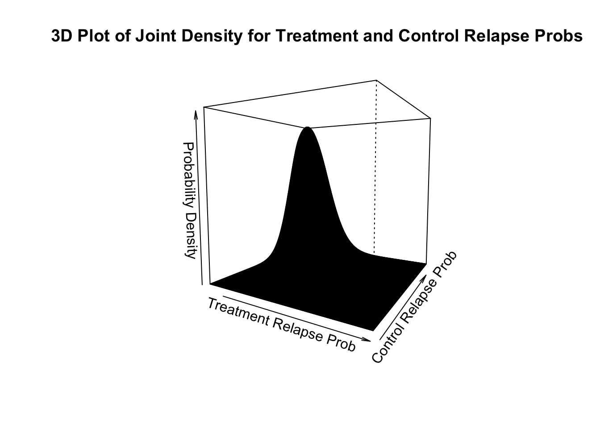
The posterior mean relapse probability for the treatment group is 19.5/71x100% = 27.5%. A 95% symmetric tail area credible interval is [17.8%, 38.3%]. The posterior mean relapse probability for the control group is 30.5/71x100% = 43.0%. A 95% symmetric tail area credible interval is [31.7%, 54.5%].
About 1⁄4 of the treatment patients relapsed, whereas almost half the control patients relapsed. Most of the posterior density function for the treatment group lies below most of the posterior density function for the control group, but the 95% credible intervals for the two parameters overlap somewhat (you were not required to compute credible intervals). While this analysis suggests that treatment lowers the relapse probability, it does not provide a statistical basis for concluding that it does.
- The joint posterior distribution is Beta(19.5,51.5)Beta(30.5, 40.5). That is, \(\theta_1\) and \(\theta_2\) are independent Beta random variables with shape parameters as given in the table above. To sample from this joint distribution, we can draw 5000 random samples from each of these Beta distributions
set.seed(92) # Kuzy
nsample=5000
contr = rbeta(nsample,19.5,51.5)
treat = rbeta(nsample,30.5,40.5)
diff=treat-contr # Estimate of difference in relapse probs
efficacious = diff>0 # If treat > control
prob.efficacious=sum(efficacious)/nsample
sd.probefficacious = sd(efficacious)/sqrt(nsample)
#Posterior quantiles, mean and standard deviation of the difference in
#relapse rates between treatment and control
quantile(diff,c(0.05,0.5,0.95)) 5% 50% 95%
0.021 0.156 0.287 mean(diff)[1] 0.15sd(diff)[1] 0.08#Density Function for Difference in Treatment and Control Relapse Probabilities
plot(density(diff),main="Kernel Density Estimator",xlab="Difference in Treatment and Control Probabilities",ylab="Posterior Probability Density")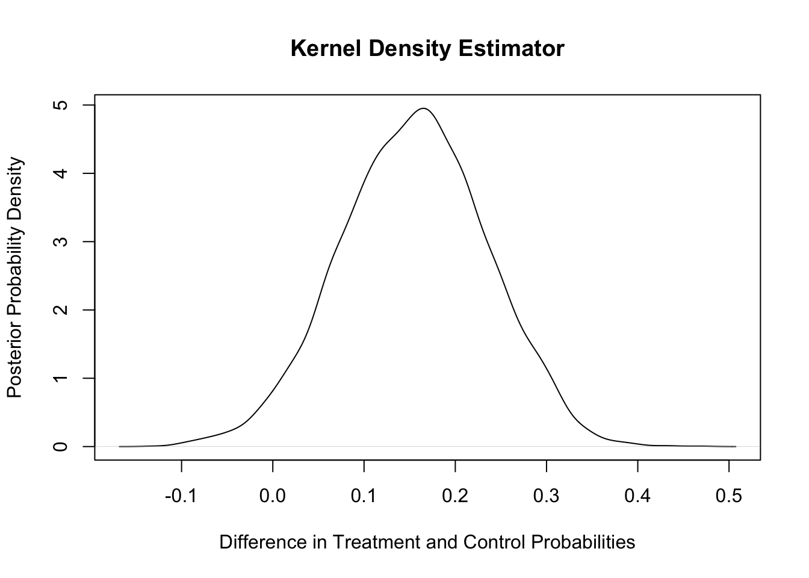
The analysis above provides evidence that there is a lower relapse probability in the treatment than in the control group. We estimate a 97.2% probability that the treatment has a lower relapse probability. The mean of the posterior distribution of the difference in relapse probabilities is approximately 0.155, and an approximate 90% credible interval for the difference in relapse rates is [0.021, 0.287].
Exercise 4 (Normal-Normal) Concentrations of the pollutants aldrin and hexachlorobenzene (HCB) in nanograms per liter were measured in ten surface water samples, ten mid-depth water samples, and ten bottom samples from the Wolf River in Tennessee. The samples were taken downstream from an abandoned dump site previously used by the pesticide industry. The full data set can be found at http://www.biostat.umn.edu/~lynn/iid/wolf.river.dat. For this problem, we consider only HCB measurements taken at the bottom and the surface. The question of interest is whether the distribution of HCB concentration depends on the depth at which the measurement was taken. The data for this problem are given below.
| Surface | Bottom |
|---|---|
| 3.74 | 5.44 |
| 4.61 | 6.88 |
| 4.00 | 5.37 |
| 4.67 | 5.44 |
| 4.87 | 5.03 |
| 5.12 | 6.48 |
| 4.52 | 3.89 |
| 5.29 | 5.85 |
| 5.74 | 6.85 |
| 5.48 | 7.16 |
Assume the observations are independent normal random variables with unknown depth-specific means \(\theta_s\) and \(\theta_b\) and precisions \(\rho_s = 1/\sigma^2_s\) and \(\rho_b = 1/\sigma_s^2\). Assume independent improper reference priors for the surface and bottom parameters: \[ g(\theta_s,\theta_b ,\rho_s,\rho_b ) = g(\theta_s,\rho_s)g(\theta_b ,\rho_b) \propto \rho_s^{-1}\rho_b^{-1}. \]
- This prior can be treated as the product of two normal-gamma priors with \(\mu_s = \mu_b = 0\), \(\sigma_s \rightarrow 0\) and \(\sigma_b \rightarrow 0\), \(a_s = a_b = -1/2\), and \(b_s = b_b \rightarrow 0\). (These are not valid normal-gamma distributions, but you can use the usual Bayesian conjugate updating rule to find the posterior distribution.) Find the joint posterior distribution for the parameters \((\theta_s,\theta_b,\rho_s,\rho_b)\). Find 90% posterior credible intervals for \((\theta_s,\theta_b,\rho_s,\rho_b)\). Comment on your results.
- Use direct Monte Carlo to sample 10,000 observations from the joint posterior distribution of \((\theta_s,\theta_b,\rho_s,\rho_b)\). Use your Monte Carlo samples to estimate 90% posterior credible intervals for all four parameters. Compare with the result of part a.
- Use your direct Monte Carlo sample to estimate the probability that the mean bottom concentration \(\theta_b\) is higher than the mean surface concentration \(\theta_s\) and to estimate the probability that the standard deviation ” of the bottom concentrations is higher than the standard deviation \(\sigma_b\) of the surface concentrations.
- Comment on your analysis. What are your conclusions about the distributions of surface and bottom concentrations? Is the assumption of normality reasonable? Are the means different for surface and bottom? The standard deviations?
- Find the predictive distribution for the sample mean of a future sample of size 10 from the surface and a future sample of size 10 from the bottom. Find 95% credible intervals on the sample mean of each future sample. Repeat for future samples of size 40. Compare your results and discuss.
- Use direct Monte Carlo to estimate the predictive distribution for the difference in the two sample means for 10 future surface and bottom samples. Plot a kernel density estimator for the density function for the difference in means. Find a 95% credible interval for the difference in the two sample means. Repeat for future samples of 40 surface and 40 bottom observations. Comment on your results.
- Repeat part e, but use a model in which the standard deviation is known and equal to the sample standard deviation, and the depth-specific means \(\theta_s\) and \(\theta_b\) have a uniform prior distribution. Compare the 95% credible intervals for the future sample means for the known and unknown standard deviation models. Discuss.
- Assume that experts have provided the following prior information based on previous studies.
- The unknown means \(\theta_s\) and \(\theta_b\) are independent and normally distributed with mean \(\mu\) and standard deviation \(\tau\). The unknown precisions \(\rho_s\) and \(\rho_b\) are independent of \(\theta_s\) and \(\theta_b\) and have gamma distributions with shape \(a\) and scale \(b\).
- Experts specified a 95% prior credible interval of [3, 9] for \(\theta_s\) and \(\theta_b\). A good fit to this credible interval is obtained by setting the prior mean to \(\mu =6\) and the prior standard deviation to \(\tau=1.5\).
- A 95% prior credible interval of [0.75, 2.0] is given for the unknown standard deviations \(\Sigma_s\) and \(\Sigma_b\). This translates to a credible interval of [0.25, 1.8] for \(\rho_s = \Sigma_s^{-1}\) and \(\rho_b = \Sigma_b^{-2}\). A good fit to this credible interval is obtained by setting the prior shape to $a = 4.5. and the prior scale to \(b\) = 0.19. Find the following conditional distributions: \(p(\theta_s \mid D,\theta_b,\rho_s,\rho_b)\), \(p(\theta_b \mid D,\theta_s,\rho_s,\rho_b)\), \(p(\rho_s \mid D,\theta_s,\theta_b,rho_b)\), \(p(\rho_b \mid D, \theta_s,\theta_b,\rho_s)\)
- Using the distributions you found, draw 10,000 Gibbs samples of \((\theta_s,\theta_b,\rho_s,\rho_b)\). Estimate 90% credible intervals for \((\theta_s,\theta_b,\rho_s^{-1/2},\rho_b^{-1/2})\) and \(\theta_b-\theta_s\).
- Do a traceplot of \(\theta_b-\theta_s\). Find the autocorrelation function of \(\theta_b-\theta_s\) and the effective sample size for your Monte Carlo sample for \(\theta_b-\theta_s\).
- Comment on your results. Compare with parts a,b, and c.
Solution:
- The joint posterior distribution for the parameters \((\theta_s,\theta_b,\rho_s,\rho_b)\) is the product of an improper prior density for the surface parameters times an improper prior density for the bottom parameters. The joint posterior density is proportional to the joint prior density times the surface and bottom likelihood functions: \[ g(\theta_s,\theta_b ,\rho_s,\rho_b \mid x_s,x_b) \propto g(\theta_s,\rho_s)g(\theta_b ,\rho_b) g(x_s \mid \theta_s,\rho_s)g(x_b \mid \theta_b,\rho_b) \]
The first two factors are proportional to the posterior density of the surface parameters; the second two factors are proportional to the posterior density of the bottom parameters. Therefore, the surface and bottom parameters are independent given the data with joint posterior density: \[ g(\theta_s,\theta_b ,\rho_s,\rho_b \mid x_s,x_b) \propto g(\theta_s,\rho_s \mid x_s)g(\theta_b ,\rho_b \mid x_b) \] We will calculate the posterior distributions for the surface and bottom parameters in turn.
The prior density for the surface parameters is \(g(\theta_s,\rho_s) \propto \rho_s^{-1}\)
This is the limit of the density function for a normal-gamma conjugate prior distribution. We use the Normal-Normal-Gamma update rules. The prior is given by \[ g(\theta,\rho \mid \nu,\mu,a,b) = \sqrt{\frac{\nu\rho}{2\pi}} \exp\left(-\frac{\nu\rho}{2}(\theta-\mu)^2\right) \frac{b^a}{\Gamma(a)}\rho^{a-1}e^{-b\rho} \]
For prior parameters \(\mu_0 =0 ,\, \nu=0,\, \alpha=-0.5 ,\, \beta=0\), the posterior values are \[ \frac{\nu\mu_0+n\bar{x}}{\nu+n} ,\, \nu+n,\, \alpha+\frac{n}{2}, \beta + \tfrac{1}{2} \sum_{i=1}^n (x_i - \bar{x})^2 + \frac{n\nu}{\nu+n}\frac{(\bar{x}-\mu_0)^2}{2} \] Pluggin-in our values \(n=10\) and \(\bar{x}=4.8\), we get the posterior values for the Surface \[ \mu^* = \frac{0+10*4.8}{0+10} = 4.8 ,\, \nu^* = 0+10=10,\, \alpha^* = -0.5+\frac{10}{2} = 4.5, \, \beta^* = 0 + \tfrac{1}{2} \sum_{i=1}^{10} (x_i - 4.8)^2 = 1.794 \]
s = c(3.74,4.61,4.00,4.67,4.87,5.12,4.52,5.29,5.74,5.48)
b = c(5.44,6.88,5.37,5.44,5.03,6.48,3.89,5.85,6.85,7.16)
print(mean(s))[1] 4.8print(mean(b))[1] 5.8print(0.5*sum((s - mean(s))^2))[1] 1.8print(0.5*sum((b - mean(b))^2))[1] 4.6Similar calculations for the bottom parameters give us the posterior values \[ \mu^*=\frac{0+10*5.84}{0+10} = 5.84,~ \nu^* = 0+10=10,\, \alpha^* = -0.5+\frac{10}{2} = 4.5, \, \beta^* = 0 + \tfrac{1}{2} \sum_{i=1}^{10} (x_i - 5.84)^2 = 4.627 \]
To summarise, we have:
| \(\mu^*\) | \(\nu^*\) | \(\alpha^*\) | \(\beta^*\) | |
|---|---|---|---|---|
| surface | 4.8 | 10 | 4.5 | 1.794 |
| bottom | 5.84 | 10 | 4.5 | 4.627 |
The marginal distribution for \(\theta_s\) is nonstandard \(t\) with center 4.80, spread \(1/\sqrt{\nu^*\alpha^*/\beta^*} = 0.20\), and degrees of freedom 9. The marginal distribution for \(\theta_s\) is nonstandard \(t\) with center 5.84, spread \(1/\sqrt{\nu^*\alpha^*/\beta^*} = 0.32\), and degrees of freedom 9. Using the quantiles of the t distribution
qgamma(c(0.05,0.95),4.5,1.794) # marginal posterior for \rho_s[1] 0.93 4.72qgamma(c(0.05,0.95),4.5,4.627) # marginal posterior for \rho_b[1] 0.36 1.834.8 + c(-1,1)*1.833*(1/sqrt(10*4.5/1.794)) # marginal posterior for \theta_s[1] 4.4 5.25.84 + c(-1,1)*1.833*(1/sqrt(10*4.5/4.627)) # marginal posterior for \theta_b[1] 5.3 6.4set.seed(92) # Kuzy
# Direct Monte Carlo
numsim=5000
rhos=rgamma(numsim,4.5,1.794)
rhob=rgamma(numsim,4.5,4.627)
thetas=rnorm(numsim,4.8,1/sqrt(10*rhos))
thetab=rnorm(numsim,5.84,1/sqrt(10*rhob))
# Monte Carlo quantiles
quantile(rhos,c(0.05,0.95)) 5% 95%
0.92 4.70 quantile(rhob,c(0.05,0.95)) 5% 95%
0.36 1.84 quantile(thetas,c(0.05,0.95)) 5% 95%
4.4 5.2 quantile(thetab,c(0.05,0.95)) 5% 95%
5.3 6.4 # Estimate probability that bottom concentration is larger
sum(thetab>thetas)/numsim # Estimated prob bottom mean is larger[1] 0.99sd(thetab>thetas)/sqrt(numsim) # Standard error of estimate[1] 0.0014quantile(thetab-thetas, c(0.05,0.95)) # 90% credible interval 5% 95%
0.36 1.73 # Estimate probability that bottom precision is smaller
sum(rhob>rhos)/numsim # Estimated prob bottom precision is larger[1] 0.088sd(rhob>rhos)/sqrt(numsim) # Standard error of estimate[1] 0.004quantile(rhob-rhos, c(0.05,0.95)) # 90% credible interval 5% 95%
-3.84 0.28 # Estimate probability that bottom standard deviation is larger
sigmab=1/sqrt(rhob) # bottom standard deviation
sigmas=1/sqrt(rhos) # surfact standard deviation
sum(sigmab>sigmas)/numsim # Estimated prob bottom std dev is larger[1] 0.91sd(sigmab>sigmas)/sqrt(numsim) # Standard error of estimate[1] 0.004quantile(sigmab-sigmas, c(0.05,0.95)) # 90% credible interval 5% 95%
-0.1 1.0 - The results provide strong evidence that the mean HCB concentration in the bottom samples is larger than the mean HCB concentration in the surface samples. There is also evidence that the surface concentrations may have less variation around the mean than the bottom observations, but because of the small sample size, more evidence is needed to make a definitive assessment of whether the standard deviations are different. The p-value is 0.93 for the surface observations and 0.53 for the bottom observations, which does not reject the hypothesis of normality. Therefore, it seems reasonable to proceed with the assumption that the observations are normally distributed.
qqnorm(s,main="Normal Q-Q Plot for Surface Data"); qqline(s)
qqnorm(b,main="Normal Q-Q Plot for Bottom Data"); qqline(b)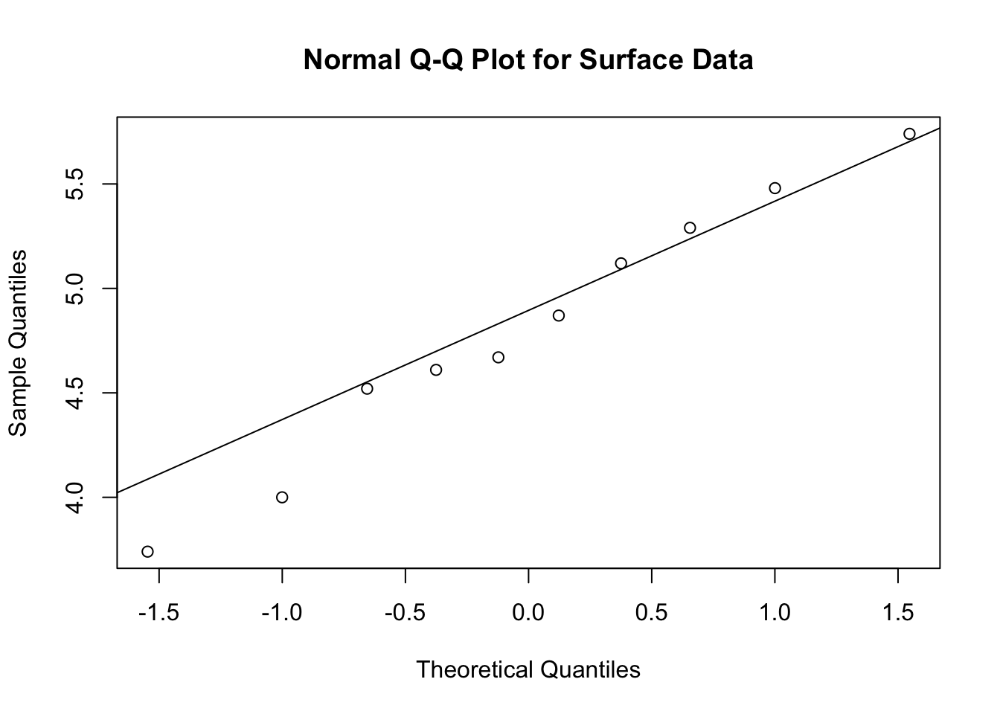
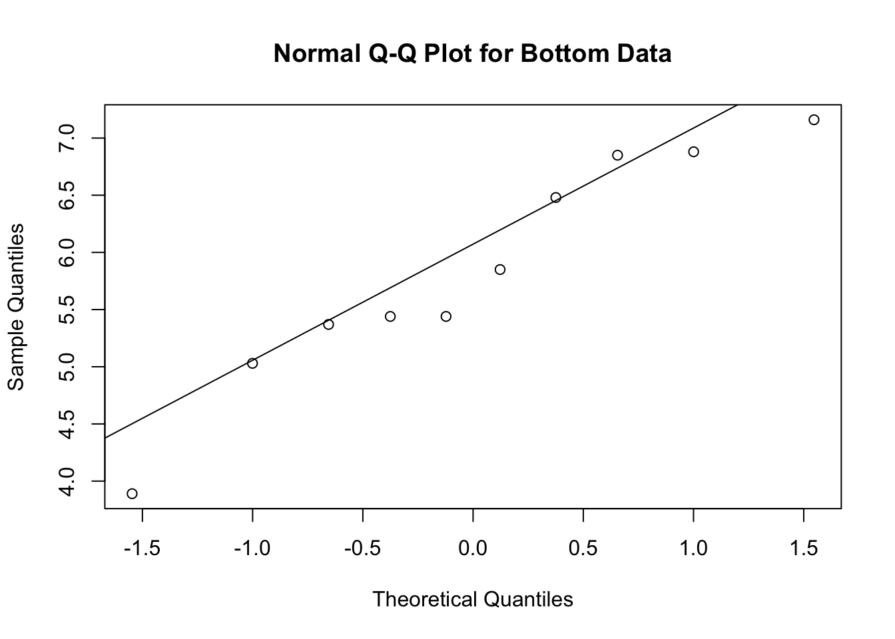
- The posterior-predictive for the sample mean for Normal-Gamma of size \(m\) is \(t\) distribution with mean \(\mu^*\) and spread \[ \dfrac{1}{\sqrt{\dfrac{\nu^*m}{\nu^*+m}\alpha^*/\beta^*}} \] and degrees of freedom \(m-1\). For \(m=10\) and the posterior parameters of the surface data, we have spread \[ \dfrac{1}{\sqrt{\dfrac{10*10}{10+10}*4.5/1.794}} = 0.28 \]
ss10 = 1/sqrt(100/20*4.5/1.794)
sprintf("Spread for surface data with m=10: %.2f",ss10)[1] "Spread for surface data with m=10: 0.28"for \(m=40\), we have spread
ss40 = 1/sqrt(400/50*4.5/1.794)
sprintf("Spread for surface data with m=40: %.2f",ss40)[1] "Spread for surface data with m=40: 0.22"For the bottom data, we have spread
sb10 = 1/sqrt(100/20*4.5/4.627)
sprintf("Spread for bottom data with m=10: %.2f",sb10)[1] "Spread for bottom data with m=10: 0.45"sb40 = 1/sqrt(400/50*4.5/4.627)
sprintf("Spread for bottom data with m=40: %.2f",sb40)[1] "Spread for bottom data with m=40: 0.36"Now we can calculate 95% credible intervals for the sample mean of each future sample
4.8+ss10*qt(c(0.025,0.975),9)[1] 4.2 5.44.8+ss40*qt(c(0.025,0.975),9)[1] 4.3 5.35.839+sb40*qt(c(0.025,0.975),9)[1] 5.0 6.75.839+sb10*qt(c(0.025,0.975),9)[1] 4.8 6.9As we would expect, the intervals for m=40 are entirely contained within the intervals for m=10, and the intervals for the posterior mean (computed above) lie entirely within the intervals for the corresponding sample means. This is because the posterior mean intervals include uncertainty only about the surface and bottom mean, whereas the intervals in this assignment include uncertainty about both the true means and the observations. The sample mean for 40 observations has less uncertainty than the sample mean for 10 observations. The intervals for surface and bottom sample means overlap more for m=10 than for m=40, and both have more overlap than the posterior mean intervals.
- We do this two different ways and verify that they give the same results to within sampling error. First draw samples of Theta and Rho, draw ssize observations, compute the sample mean, and average.
set.seed(92) # Kuzy
numsim=10000
ssize=10
rhob=rgamma(numsim,4.5,4.627) # sample b precision
thetab=rnorm(numsim,5.84,1/sqrt(10*rhob)) # sample b precision
rhos=rgamma(numsim,4.5,1.794) # sample s mean
thetas=rnorm(numsim,4.8,1/sqrt(10*rhos)) # sample surface mean
diff = 0 # Difference in sample means - initialize to 0
dd=0
for (i in 1:ssize) {
diff = diff +
rnorm(numsim,thetab,1/sqrt(rhob)) - # sample bottom observation
rnorm(numsim,thetas,1/sqrt(rhos)) # sample surface observation and subtrace
}
diff = diff / ssize # Calculate average - divide sum by number of observations
quantile(diff, c(0.025,0.975)) # quantiles 2.5% 97.5%
-0.16 2.23 plot(density(diff), # kernel density plot
main=paste("Density for Difference in Sample Means for m =",ssize))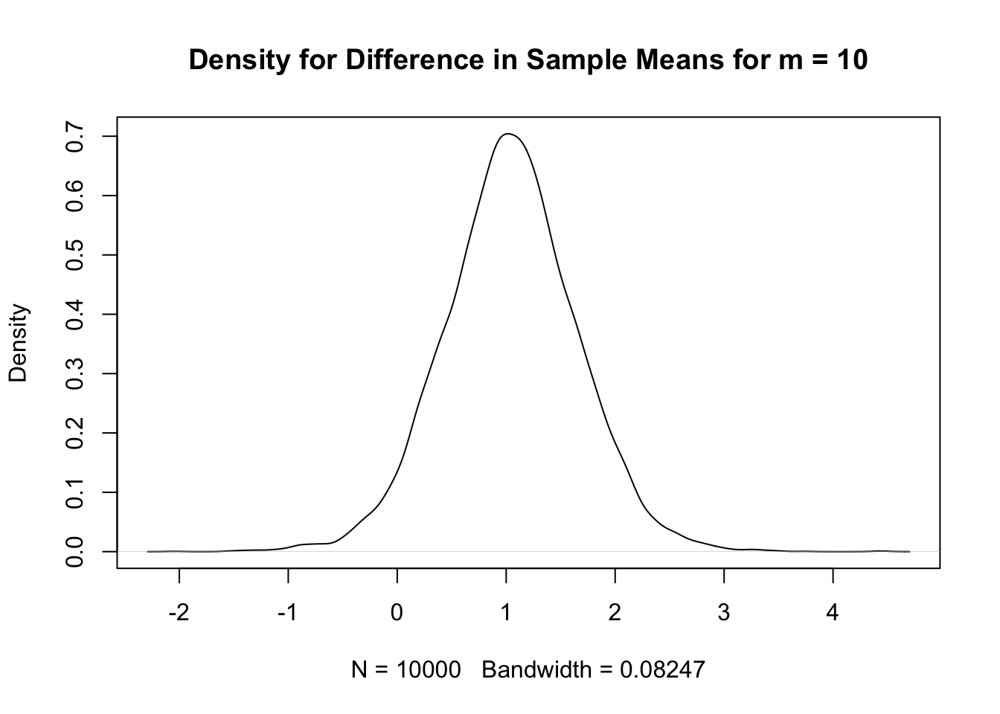
We can also sample from the t distribution (need two independent samples one for surface and one for bottom)
diff1 = 5.84 + rt(numsim,2*4.5)*ss10 -
4.8 + rt(numsim,2*4.5)*sb10
quantile(diff1,c(0.025,0.975)) # Compare with quantiles from full sampling method 2.5% 97.5%
-0.17 2.23 # Known standard deviation model
mu0=0 # prior mean for theta is 0
tau0=Inf # prior SD of theta is infinite
sigmas = sd(s) # observation SD is assumed known and equal to sample SD
sigmab = sd(b) # observation SD is assumed known and equal to sample SD
n=10
mus.star = # Posterior mean for surface
(mu0/tau0^2 + sum(s)/sigmas^2)/(1/tau0^2+n/sigmas^2)
taus.star = # Posterior SD of surface mean
(1/tau0^2+n/sigmas^2)^(-1/2)
mub.star = # Posterior mean for bottom
(mu0/tau0^2 + sum(b)/sigmab^2)/(1/tau0^2+n/sigmab^2)
taub.star = # Posterior SD of surface mean
(1/tau0^2+n/sigmab^2)^(-1/2)
sprintf("Posterior mean for surface: %.2f",mus.star)[1] "Posterior mean for surface: 4.80"sprintf("Posterior mean for bottom: %.2f",mub.star)[1] "Posterior mean for bottom: 5.84"# Predictive intervals
qnorm(c(0.025,0.975), # Surface, sample size 10
mus.star,sqrt(taus.star^2 + sigmas^2/10))[1] 4.3 5.4qnorm(c(0.025,0.975), # Surface, sample size 40
mus.star,sqrt(taus.star^2 + sigmas^2/40))[1] 4.4 5.2qnorm(c(0.025,0.975), # Surface, sample size 10
mub.star,sqrt(taub.star^2 + sigmab^2/10))[1] 5.0 6.7qnorm(c(0.025,0.975), # Surface, sample size 40
mub.star,sqrt(taub.star^2 + sigmab^2/40))[1] 5.1 6.5# Kernel density plot
plot(density(diff),main=paste("Density for Difference in Sample Means"))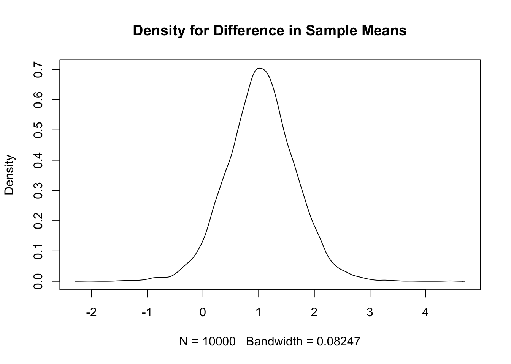